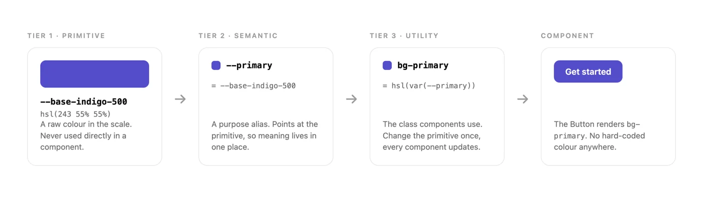
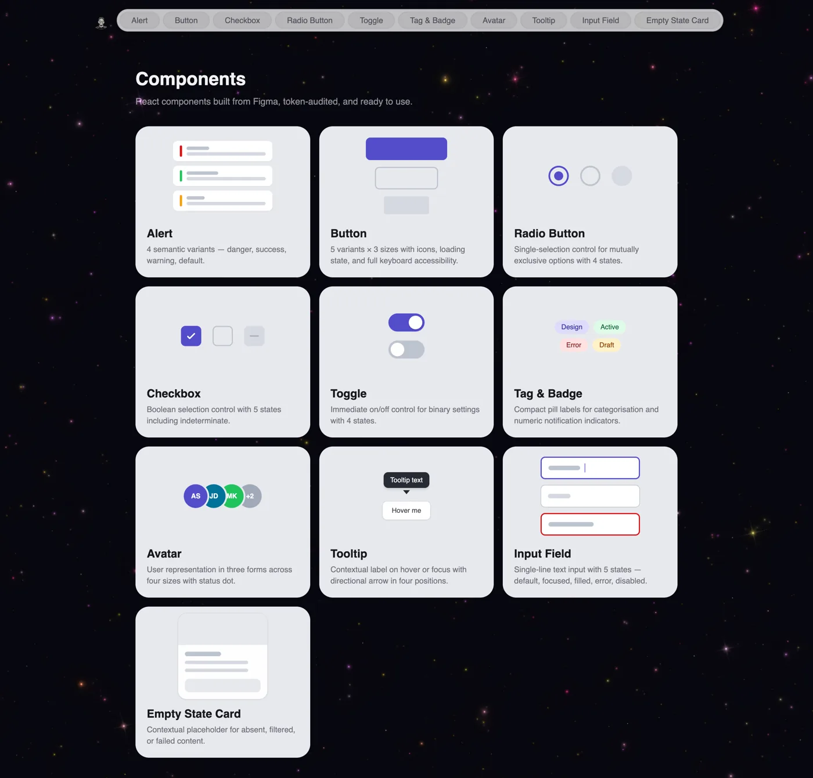

Case study 03 · Design system
Nucleus. A token-based design system for consistent UI and clean developer handoff.
In 30 seconds
- The problem: Products built without a system fall apart quietly. Four shades of the same red, buttons that drift, handoff that turns into negotiation.
- What I did: Built a complete design system from first principles. 10 components, 150+ variants, a three-tier token structure, and documentation for every decision.
- Why it matters: Every visual decision is traceable from raw value to finished component. Change the brand colour once and it updates everywhere.
Why a design system
Most projects start without one. A designer picks a few colours, makes some components and starts building screens. It works at first. Then buttons start looking slightly different across pages. There are four shades of red that were all meant to be the same. Changing the brand colour becomes a week of work instead of a five-minute update.
A design system is a single source of truth for every visual decision. And there is a new reason it matters now: AI agents are generating screens and shipping code. An agent is only as good as the system it works inside. Without tokens it hardcodes colours. Without rules it makes things up. With a system, AI output starts consistent instead of needing a manual cleanup pass.
Nucleus was built to make these problems structurally impossible.
The problems it prevents
- Hardcoded colours everywhere. Raw hex values in components mean every brand change is manual, and something always gets missed.
- No spacing logic. One button has 12px padding, another 14px, a third 16px. None looks wrong alone. Together they feel off.
- Component drift. The login button and the dashboard button were built weeks apart. They were supposed to be the same. They are not anymore.
- No shared language. The designer says "primary blue." The developer says "#0AC2FF." Handoff becomes a negotiation.
The token structure
Nucleus uses three tiers. Tier 1 holds raw values: the full colour palette, the spacing scale, the font tokens. Tier 2 holds semantic names like surface, text, border and radius that point at tier 1 values. Tier 3 holds component-specific tokens for things like inputs, checkboxes and toggles.
One rule guided every decision: if changing a token should update many components at once, it belongs in the semantic tier. If it should affect only one component, it belongs in the component tier. That keeps the structure intentional instead of arbitrary.

Foundations
- Colour. Two brand ramps (indigo primary, blue secondary), a neutral backbone, and four feedback ramps. Each feedback colour has three stops that map directly to component roles: light for backgrounds, base for borders and icons, dark for text.
- Type. Inter for all UI text, Playfair Display reserved for editorial moments, JetBrains Mono for code.
- Spacing. A 4-point scale from 0 to 56. Components reference semantic spacing tokens, never raw numbers.
- Touch targets. Every interactive component meets a 40x40 minimum. Small controls like the 16x16 radio sit inside invisible wrappers that grow the tappable area without changing the look.
The components
Ten components, each defined on paper before any frames were drawn: anatomy, properties and usage notes first, Figma second. All built with auto layout, boolean properties for optional parts, and variant sets for types and states.
- Button: 75 variants. 5 types, 5 states, 3 sizes. Disabled uses 40% opacity, not a colour change, so it works on any surface.
- Input field: always fills its container. Helper text becomes the error message in the error state.
- Checkbox, radio, toggle: small visual controls inside full-size touch targets.
- Alert, badge, tag, avatar, tooltip, empty state: each with its own documented rules, like tags truncating at 160px and error empty states using the danger button, not the primary one.

Documentation
Every component page has four sections: a header with version and property counts, all variants shown live on the canvas, an anatomy diagram with numbered labels and a property table, and usage guidelines written as actions. "Use danger for destructive states" rather than "danger is for destructive states." The goal: a developer opening the file for the first time understands not just what each component looks like, but why it was built that way.
Governance, if a team adopted it
A system only stays useful if it has rules for how it grows. Nucleus defines a named owner, a four-step contribution process (propose, review, build, publish), semantic versioning, and a deprecation cycle. Components are never deleted immediately. Token renames are treated as breaking changes and keep the old name live until everyone has migrated.
What I learned
Starting with tokens before touching components was the right call. Every component built after the token system existed went faster, because colour, spacing and naming were already settled. The system was doing its job before a single component existed.
What I would do differently: plan the full three-tier structure from day one. Moving from two tiers to three mid-build meant rebinding tokens on every component. And I would add dark mode support from the start, because the semantic layer is exactly the right place for it and it only works if you plan it before naming the first token.
Next on the roadmap: modal, dropdown, navigation bar, toast, data table, dark mode and a full accessibility audit.